Lýsing
Tilgangur verkefnis
Tilgangur verkefnisins er að kynna nemendum fyrir og kenna þeim á bæði vínylskera (límmiðagerð) og að nota laserskera til þess að búa til þrívíddan hlut úr tvívíddri plötu
Lýsing frá kennara
Einstaklingsverkefni:
- Notaðu vínylskerann til að búa til eitthvað. 100x50cm skurðarflötur max.
- Hannaðu parametrískt, geirneglt (pressfit) módel af byggingareiningum. Módelið þarf að vera skalanlegt á mismunandi máta (efnisþykkt, hæðir og breiddir sem nemandi velur), útfært með góðum parametríum í hugbúnaði að eigin vali. Mælt er með Autodesk Fusion 360 ef nemandi vill fá aðstoð kennara, en hafi nemandi tök á því að nota annan CAD hugbúnað þá er það í góðu lagi.
Hönnunin þarf að innihalda amk 3 geirnegldar festi punkta. Auka stig fyrir mismunandi gerðir af festingum.
Hægt er að velja um mismunandi gerðir af efni fyrir geislaskerann:
- ~4mmx500mmx500mm birkikrossviður
- ~3mmx500mmx500mm akríl (Glært, svart eða hvítt)
Mögulega fleiri þykktir, tilkynnt síðar. Athugið að þykktina þarf að mæla og staðfesta fyrir nákvæmni.
Skerðu út módelið og skjalfestu á heimasíðunni þinni. Settu hönnunarskjöl inn á gagnabanka og settu hlekk inná síðuna þína.
Hópaverkefni:
Veljið geislaskera og ákvarðið með prófunum kerf fyrir þann skera. Skjalfestið á ykkar persónulegu vefsíður.
Nemendur mega vinna saman 3 í hóp.
Mín úrlausn
Hér er hægt að hoppa á milli verkefna hluta
Dagssetning: 07.02.2024
Það fyrsta sem ég gerði var að downloada InkScape sem er open-source myndvinnslu forrit. Hér er hægt að finna forritið InkScape.
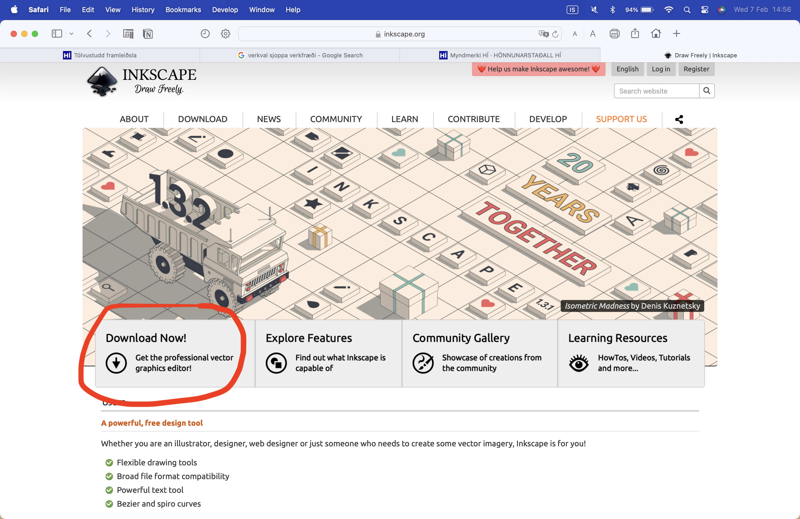
Síðan þarf bara að velja rétta útgáfu fyrir sína tölvu
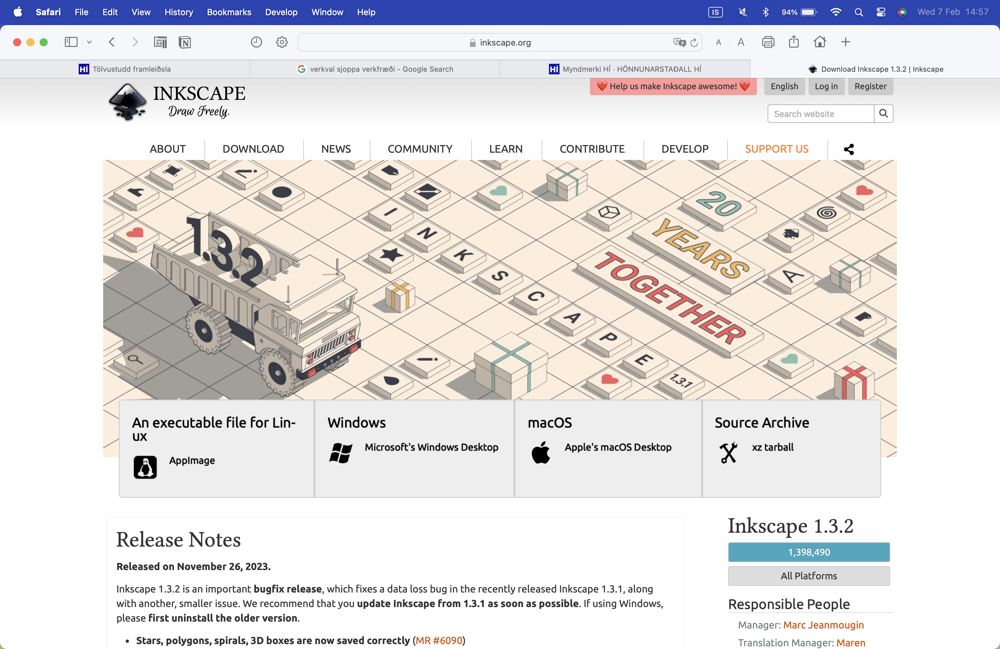
Ég ákvað að skera út Verkval logo-ið því ég var að vinna í verkefni í öðrum áfanga og þar vorum við að gera kortaskanna fyrir Verkval.
Ég fór inn á Instagram-síðu Verkvals og tók skjáskort af merkinu þeirra.

Því næst fór ég á netið og breytti myndinni í SVG skrá með Convertio.com
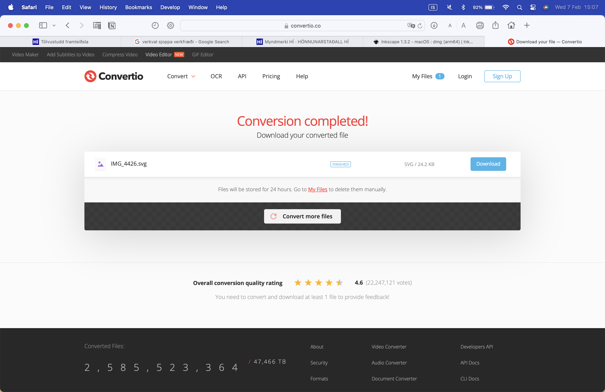
Síðan opnaði ég þá SVG skrá með InkScape.

Þar þarf að velja alla myndina (Ctrl/Cmd + "a"), velja stærðina á myndinni sem hentar best og velja eftirfarandi stillingar undir „Fill and Stroke“:
- Fill: No paint
- Stroke: Flat color
- Stroke style: Width: 0,02 mm
Hér má sjá þessar stillingar
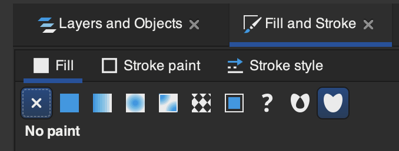
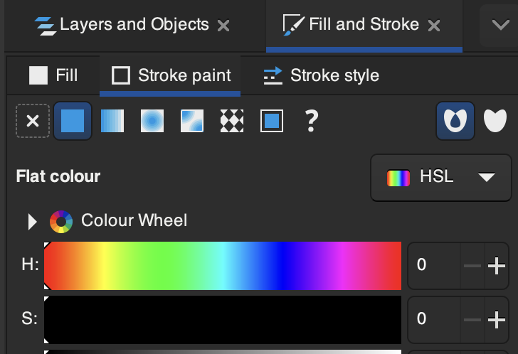
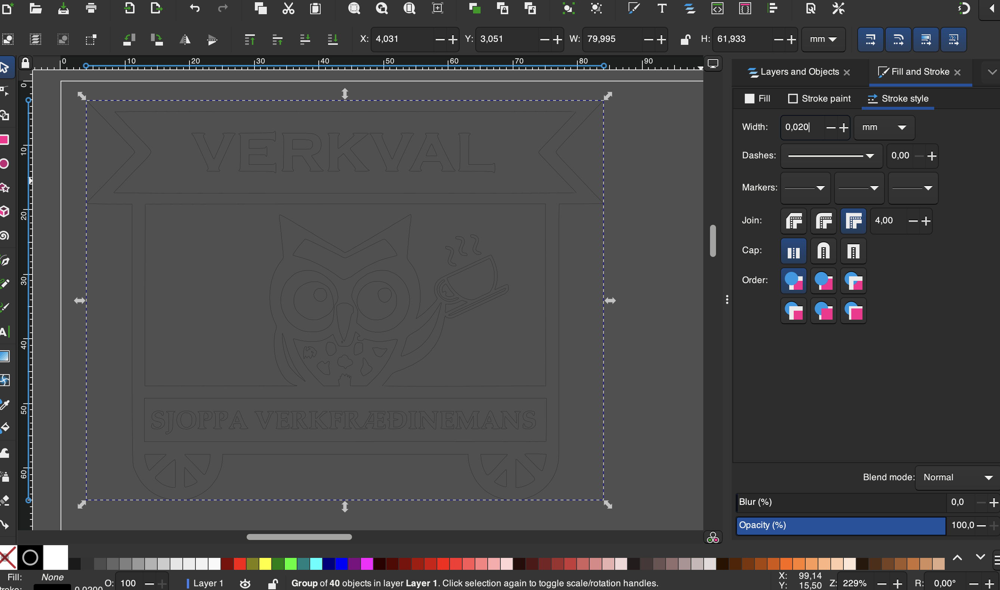
Til þess að skera límmiðan út þarf að gera eftirfarandi:
- Velja lit á límmiða og setja það efni í vínylskerann
- Núllstilla vínylskerann með „edge“-stillingu í vélinni
- Opna skránna í InkScape í tölvunni sem tengd er við vínylskerann (færði skránna yfir með USB-kubb) og exporta skránna sem PDF
- Opna PDF skjalið í Adope Acrobat og prenta skjalið (Ctrl/Cmd + "p") til þess að færa það yfir í skerann
- Þar stillir maður stillingarnar (e. properties) með því að velja „Get from machine“
- Síðan velur maður „OK“ (eða „Print“) og vélin byrjar að skera myndina úr
- Því næst þarf bara að fjarlægja vínylinn sem á ekki að vera á límmiðanum (þetta tók frekar langan tíma hjá mér því ég ákvað að vera sniðugur og gera ótrúlega nákvæma mynd með fínum smáatriðum, en það er ekkert mál ef maður hefur gaman af því að föndra smá)
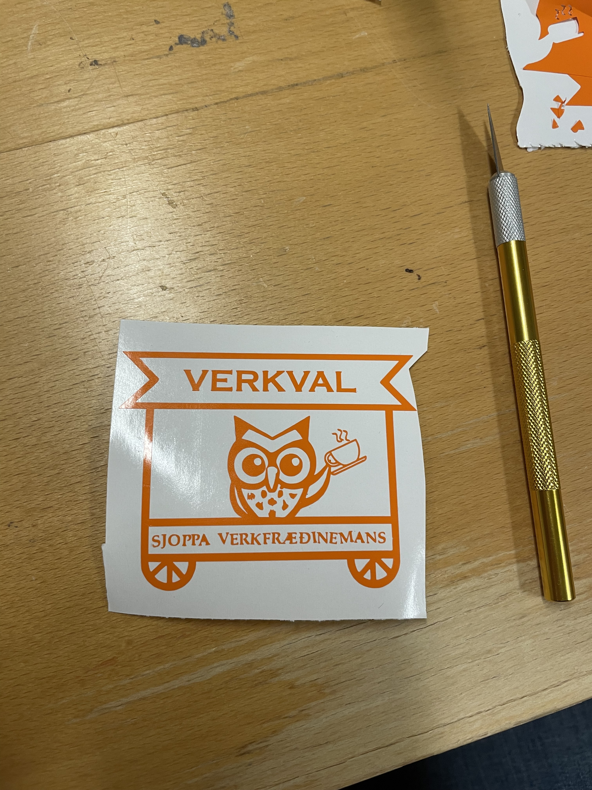
Það eina sem eftir er er að hylja límmiðann með málningarlímbandi. Þetta er vegna þess að límið á málningarteipinu er sterkara en límið á milli vínulsins og plastsins en það er samt veikara en límið á vínylnum. Það þarf bara að taka vínylinn af plastinu með málningarteipinu og líma límmiðann á réttan stað, í mínu tilfelli er það hurðin að verkvalafgreiðslu plássinu.
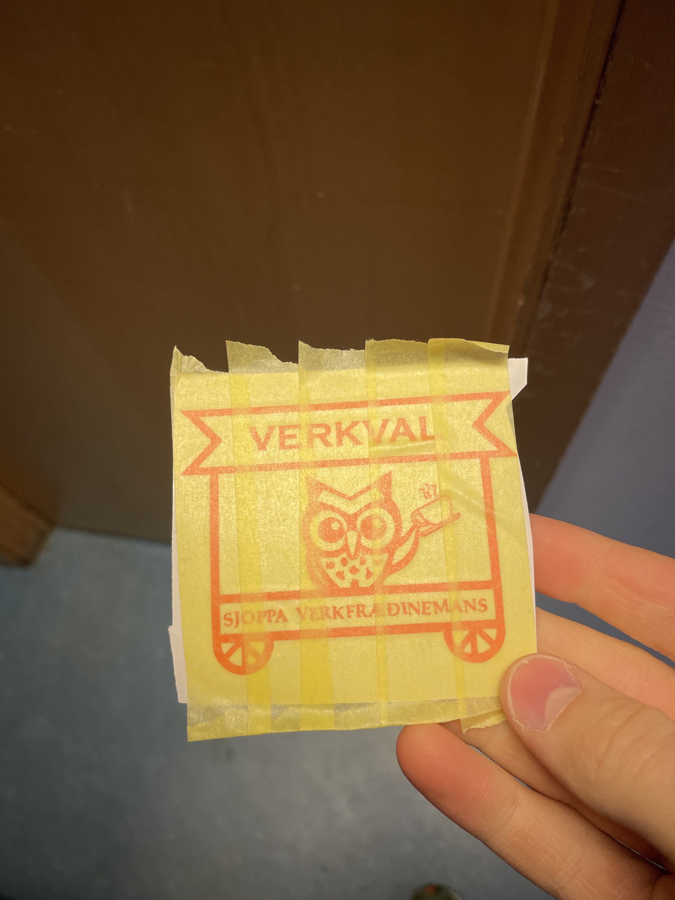
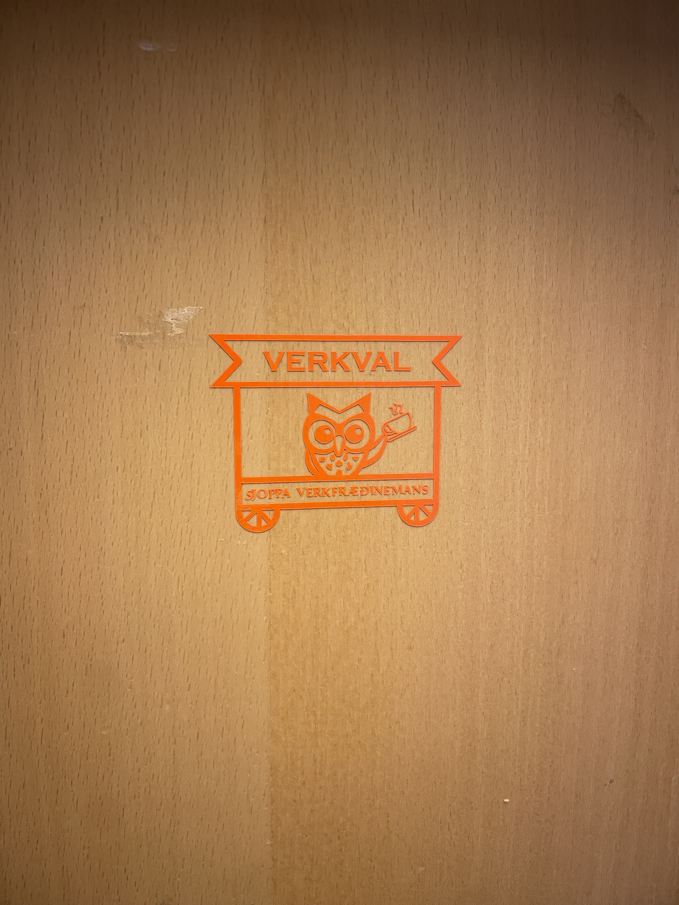
Tími:
Unnið í InkScape: 25 mín
Skurður framkvæmdur: 5 mín
Snyrta límmiða: 20 mín
Glósa verkefnið: ~10 mín
Samtals: ~ 1 klst
Dags.: 14.02.'24
(Unnið var með Arnóri Daða og Örvari Erni)
Markmiðið er að finna kerf-ið, sem er þykktin á laser-geislanum. Það þarf að gera ráð fyrir efninu sem laserinn sker úr plötunni, því er kerf-ið sett inn í teikningar fyrir skurð svo hægt sé að „offset“-a öllum línum í teikningum áður en hluturinn er skorðinn úr. Þetta er gert svo að hluturinn passi saman í raunheimum sem og tölvuheimum.
Við teiknuðum 10 kassa upp við hvern annan í Fusion 360 og færðum svo yfir í InkScape á DXF formi. Passa þarf að það séu ekki 2 línur ofan á hverri annari því laser-skurðar vélin nemur það og sker þá tvisvar í þær línur. Þetta veldur skekkju í kerfmælingunni því bilið á milli kassanna verður meira ef laserinn er búinn að skera tvisvar í gegnum plötuna á sama stað.
Einnig er hægt að teikna þessa kassa bara beint í InkScape.
Hér að neðan sést teikningin af kössunum í Fusion 360:
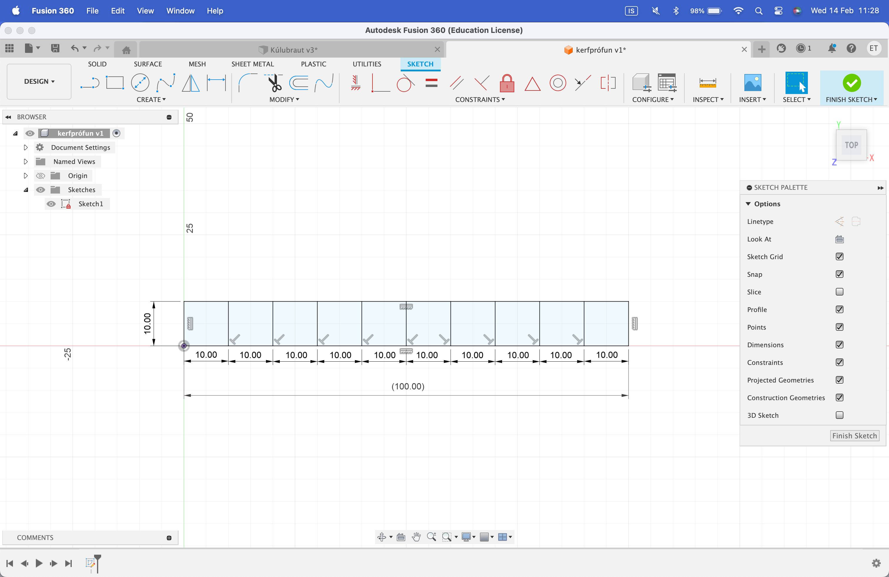
Sömu stillingar voru notaðar í InkScape og í vínylskurðinum:
- Fill: No paint
- Stroke: Flat color
- Stroke style: Width: 0,02 mm
Því næst var SVG skrá sett inn á USB-kubb og hann settur í tölvuna sem tengd er við laser-skurðarvélina. SVG skráin er opnuð í InkScape í tölvunni, athugað er hvort allar stillingar eru réttar (og lagaðar ef þarf). Síðan er einfaldlega ýtt á print (Ctrl/Cmd + "p"), enter þegar lítill stillingar gluggi opnast og þá opnast forritið fyrir vélina.
Nú er platan sem skera á úr sett inn í vélina og vélinni lokað. (Við fengum ekki val á milli krossviðar og acrýls því krossviðurinn var víst búinn í landinu, þannig acrýll it is.) Passa þarf að teikningin í tölvunni sé rétt staðsett á plötunni (það er myndavél í skurðarvélinni sem birtir rauntíma upptöku í tölvuna) til þess að spara efnið sem mest.
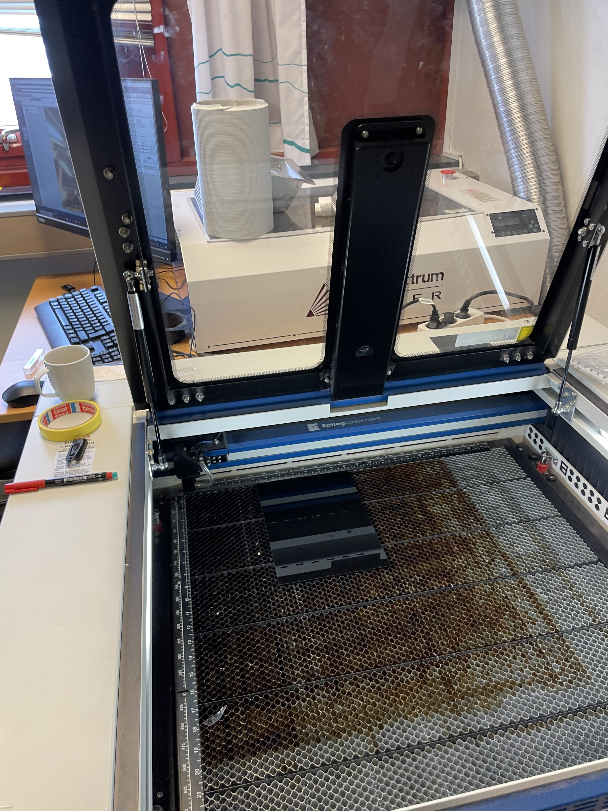
Þegar búið er að velja rétta staðsetningu á plötunni er rétt efni valið inn í tölvunni með því að „import“-a efninu. Margir samnemendur mínir voru að lenda í því að laserinn skar ekki alltaf alveg í gegnum plötuna og lausnin við því var að hægja aðeins á vélinni til þess að gefa henni tíma í að skera í gegnum efnið. Það er því gott að setja „Speed“ í 20%. Þegar þetta er komið er bara ýtt á „Print“ neðst í hægra horninu. Þá ætti skráin að vera komin í vélina (hægt er að lesa nafnið af skánum á vélinni). Síðan er sveifinni (sem stendur á Mercury...) snúið (það kveikir á loftdælunni (pjúff)) og svo er ýtt á „play/pause“-takkann (það er blátt ljós á takkanum) til þess að kveikja á henni. Þá byrjar vélinn að skera út. Hér að neðan má sjá sveifina og takkann
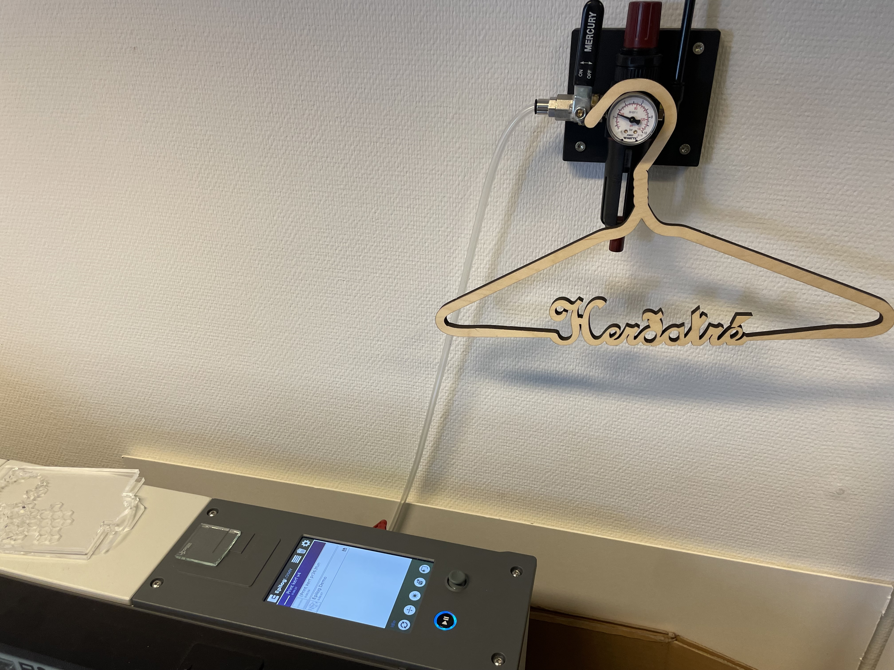
Ef fólk vill vera nákvæmt þá mældi kennarinn mældi með því að stika yfir kassana með tússpenna til þess að vita rétta röð á kössunum ef þeir fara út um allt.
En til þess að taka þá úr vélinni er síðan besta að nota málningarlímband, líma yfir alla lausu kassana og plötuna til þess að hægt sé að taka þetta allt saman upp á sama tíma.
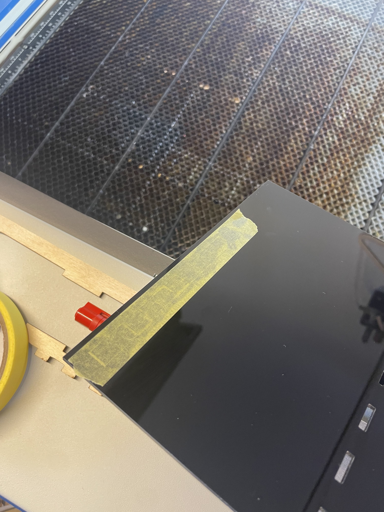
Til þess að mæla kerf-ið eru til tvær aðferðir; annars vegar mæla alla kubbana saman og draga það frá gatinu sem myndaðist á plötunni og svo hins vegar mæla alla kubbana út af fyrir sig, leggja það saman og draga síðan frá gatinu sem myndaðist á plötunni. Við ákváðum að mæla alla kubbana saman því það er minni aflestarar- og mæliskekkja í þeirri aðferð en að mæla þá alla út af fyrir sig (og svo er það bara einfaldara og fljótlegara). Hérna eru myndir til þess að sýna hvernig við gerðum þetta:
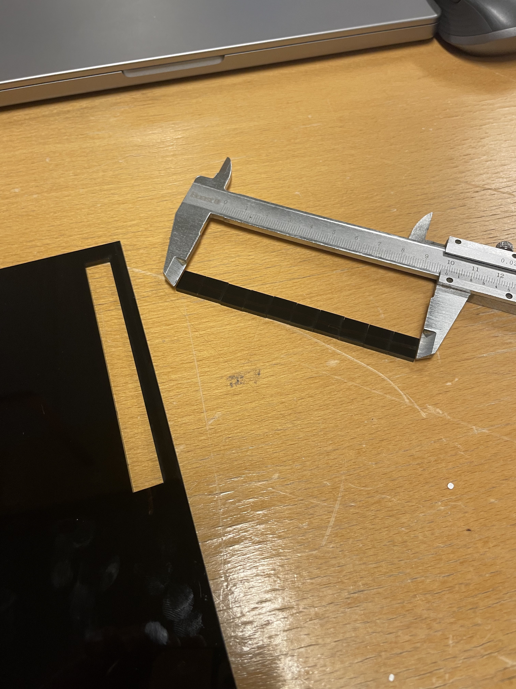
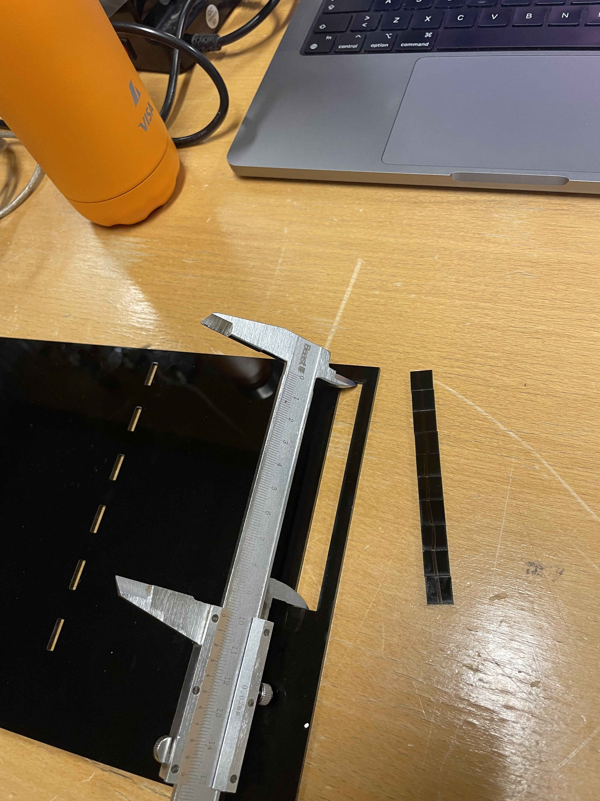
Hér eru mældar niðurstöður og reikningur:
- Kassarnir 10 saman (breidd):
- =98,94 mm
- Gatið sem myndaðist:
- =100,02 mm
- Mismunur:
- =1,08 mm
- Kerfið:
- Deilum með 11 því það eru 11 línur:
- =1,08/11 = 0,098181818... mm
Niðustaðan er því að mælda kerfið er 0,09818 mm.
Tími:
Framkvæmd kerf mælingar: 45 mín.
Skráning: ~20 mín
Hér má sjá lokaniðurstöðuna:
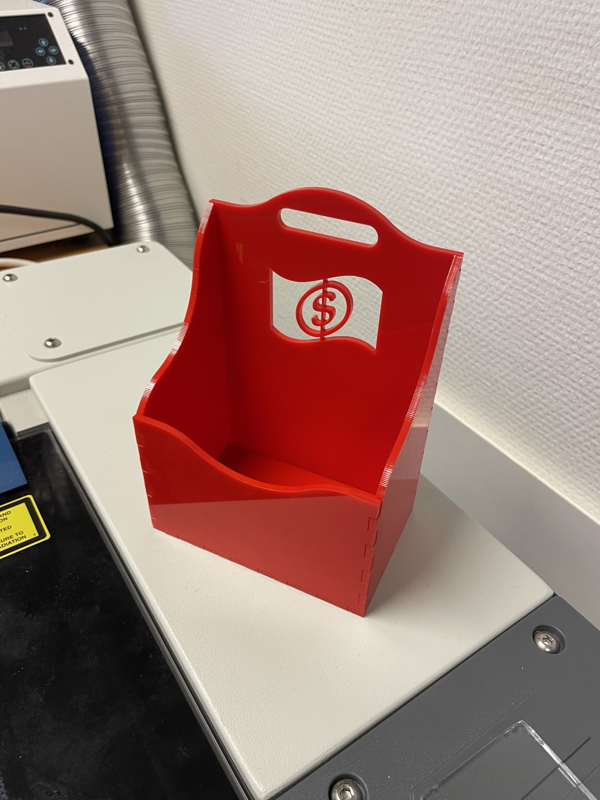
Dags.: 13.02.'24
Það fyrsta sem ég gerði var að leggja höfuðið í bleytu til þess að ákveða hvað ég ætti að gera. Mér datt ekkert strax í hug en eftir smá tíma datt mér í huga að gera peningabox með tveimur hólfum, sem hægt væri að nota fyrir eitthvað annað en bara peningabox, eins og mögulega box utan um 3D prentaðuðu hlutina mína eða bara bara einfaldlega box með skilrúmum.
Dags.: 21.02.'24
Ég ákveð að hafa frekar bara 1 hólf til einföldunar og til þess að ég myndi ekki falla á tíma (ráð til framtíðar nemenda: það er oft mikil eftirspurn eftir laserskurðarvélinni (og 3D prenturum sérstakelga) svo það er betra að byrja fyrr en seinna á verkefnunum).
Í staðinn fyrir auka hólf ákvað ég að hafa peningamerki útskorið úr kassanum og sveigðar brúnir á köntunum ásamt misháum veggjum, til þess að kassinn líti betur út og svo það sé einfaldara að ná í hlutina sem geymdir eru í kassanum. Markmiðið var að hafa einfalda en flotta hönnun. Einnig bætti ég við handfangi því why not.
Ég notaði skiðmál til þess að sjá fyrir stærðirnar sem mig langaði að hafa á kassanum og endaði á því að hafa eftirfarandi stærðir:
- Botn og framhlið: 11x17 cm
- Hliðar: 7x14 cm
- Bakhlið: 11x14 cm
Heildarflatarmál er því u.þ.b. 50400 mm2 sem sleppur því hönnunin átti öll að passa á eina plötu sem er 250000 mm2. Hér er uppkast eftir því hvernig ég sá fyrir mér að kassinn ætti að lýta út.
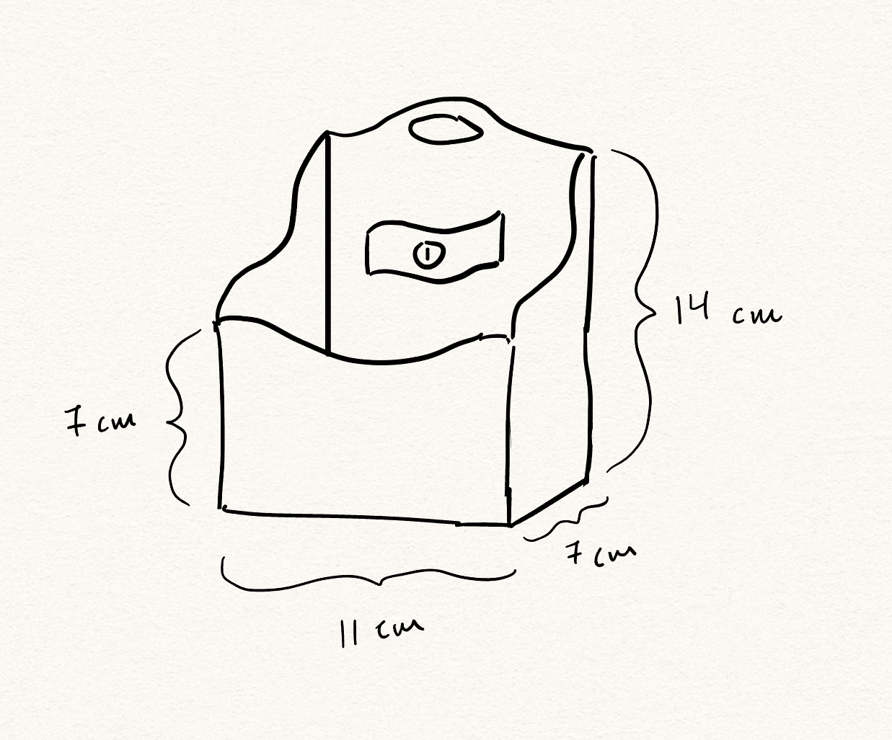
Næsta skref var bara að byrja að hanna hlutinn í Fusion 360. Ég horfði á þetta myndband til þess að gera kassa með parametrískri hönnun, eins og verkefnið segir til um að eigi að gera. Hlutur sem er hannaður með parametrískri hönnun mun sjálkrafa uppfæra sig ef einni stærð er breytt.
Síðan teiknaði ég upp hlutinn með parametrískri hönnun. Ég mæli með að skoða myndbandið, það útskýrir mjög vel hvernig best er að nálgast það að hanna einfaldan kassa með parametríu og það nýtist mjög vel þegar hanna á flóknari hlut.
Hér að neðan eru myndir af hönnunarferlinu mínu (því myndir segja meira en 1000 orð, sérstaklega þegar maður nennir ekki að skrifa 1000 orð...), taka má sérstaklega eftir því að ég tek þessar myndir eftir á og nýti mér „history marker“-eiginleika (eða tímalínu eiginleika) í Fusion 360 sem kemur sér vel þegar maður vill fara aftur í tímann og breyta einhverju eða bara einfaldlega sjá hvernig hluturinn lýtur út fyrir og eftir breytingar. Þennan tímalínu eiginleika má sjá neðst á myndunum.
Passa þarf upp á að þegar búið er til einingarlausar breytur þá þarf að velja „No units“ valmöguleikann. Ég lenti í bölvuðu barsli með það og það tók mig smá tíma að fatta að þetta litla skref var það sem var að valda mér veseninu. Hér er síðan lokaniðurstaðan á parametríunni minni.
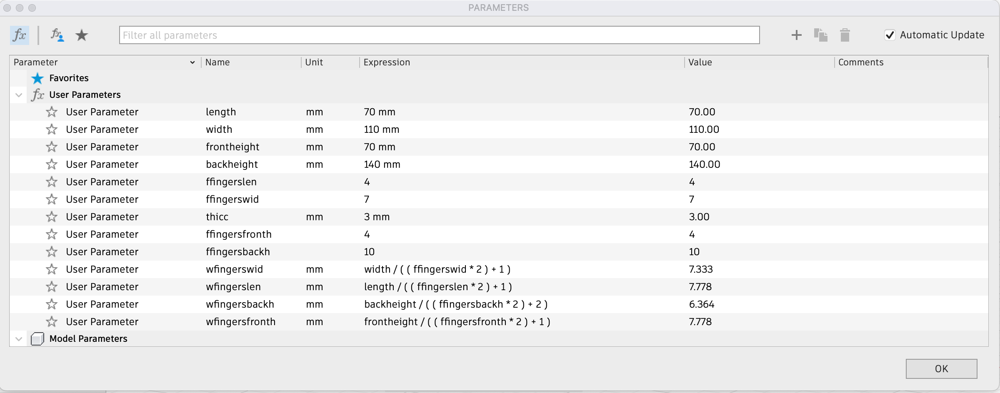
Dags.: 22.02.'24
Þegar hér var komið sögu var næsta verkefni að setja inn peningamerkið. Eftir stutta Gooogle leit fann ég merki sem mér líkaði við og ákvað að nota. Hér er það merki:
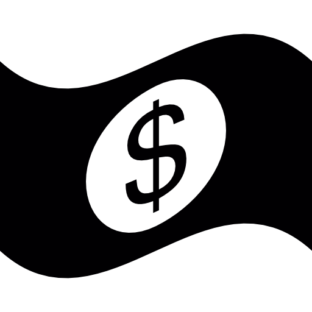
Ég reyndi að færa það beint inn en það virkði ekki svo ég reyndi að færa SVG skrá af myndinni (notaði aftur Convertio.com til þess að breyta merkinu í SVG skrá) en það virkði ekki að vinna neitt með það. Þá fór ég að gramsa á veraldarvefnum og fann þetta myndband sem lýsti ferlinu frekar vel. Í stutt máli þarf að:
- Import-a SVG skrá inn í Fusion teikninguna þín
- Extrude-a myndina þína því það er léttara að vinna með heila hluti í Fusion en teikningar (hér gæti þurft að offset-a útlínur til þess að hægt sé að búa til hlut úr teikningunni þinni)
- Færa myndina (núna hlutur (e.solid)) á réttan stað
- Project-a myndina á flötinn sem hún á að vera á og fela (e. hide) myndina
- Extrude-a nýju teikninguna sem varð til við að project-a og athuga hvort þetta komi ekki rétt út
Hér eru mynd af merkinu mínu á hlutnum þegar ég er búinn að fara í gegnum skrefin hér að ofan
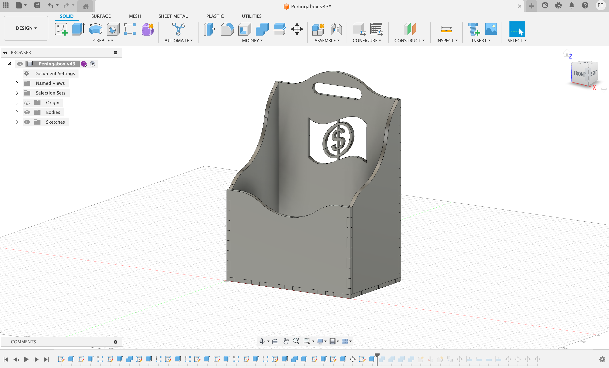
Hér fattaði ég að athuga hvort allar „tennurnar“ á kassanum mínum væri ekki réttar og lagaði hliðarnar sem voru ekki réttar. Hér að neðan eru myndir af hlutnum fyrir og eftir að ég nota „combine“ skipunina til þess að búa til nýjar tennur á nýjum fleti. Vinstra megin er fyrir-myndin og þar sést að fletirnir skarast af því þar er heil lína alla leið niður. Hægra megin sést að það ser búið að laga skörunina og línan er brotin.
Núna getur einnig verið mjööög gott að mæla plötuna sem á að skera úr til þess að ganga úr skugga um að teikningin sé rétt stillt miðað við plötuna. Ef platan er ekki nákvæmlega jafn þykk og teikningin segir til um er ekkert mál að breyta því ef hluturinn var hannaður með parametríu. Í mínu tilfelli var platan einmitt 3 mm svo ég þurfti ekki að breyta neinu.
Dags.: 26.feb.'24
Næsta skref er að fletja út hlutinn. Til þess að gera það er mjög þægilegt að búa til components í hlutnum þínum því það einfaldar vinnuna rosalega mikið og þá er hægt að sjá hvernig hluturinn er í 3D og þegar það er búið að fletja hann út. Hérna er mjög gott myndband sem lýsir því hvernig best er að búa til þessa components. Önnur stutt samantekt:
- Býrð til 3D og flatan component (hægri-smellir á hlutinn í trénu vinstra megin og skýrir það 3D)
- Færir öll „bodies“ (íhluti) í 3D component-inn
- Notar copy/paste til þess að færa alla íhlutina yfir í flata component-inn
- Núna getur þú valið hvað þú vilt sjá með auganu
Hér er mynd af trénu mínu þegar ég er búinn að búa til þessa components
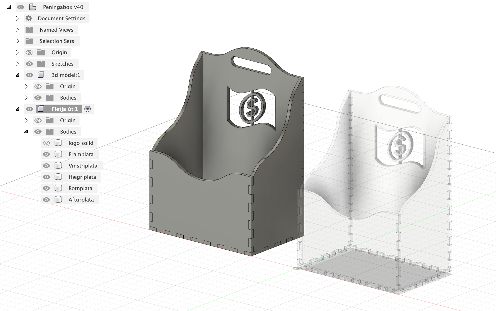
Síðan þarf að fletja út hlutinn. Kennarinn benti okkur á annað fínt myndband sem ég notaði. Í því er sýnt hvernig á að:
- nota „align“-skipunina til þess að fletja út hlutinn sinn. Hér er ég búinn að því (vinstri) og svo endurraða íhlutunum svo þeir skarist ekki á (hægri). Ég mæli með því að raða þeim þannig þeir taki sem minnsta plássið núna, það einfaldar lífið seinna
- setja kerf-ið fyrir vélina. Skrefin eru:
- Design -> Manufacturing -> Setup -> Fabrication -> Cutting -> Tool -> New -> Cutting -> Laser cutter -> Cutter -> Setja inn kerf
Ég prófaði að byrja á því að velja kerf sem 0,18 mm því það kerf hafði verið að virka fyrir nokkra samnemendur mína. Hér er mynd af kerf stillingunum mínum
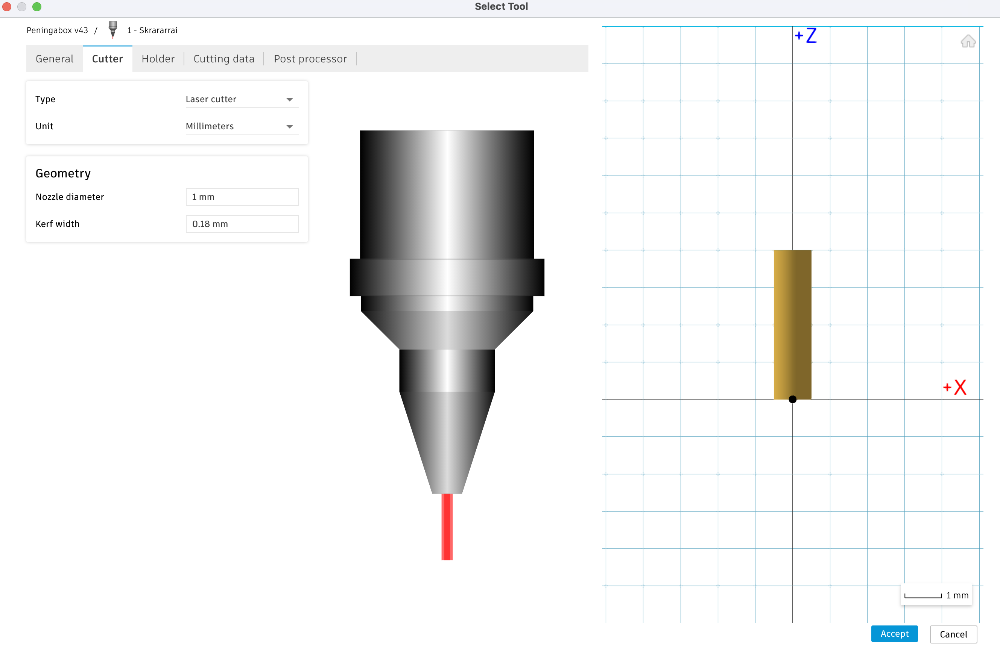
- export-a skránna sem dxf og
- hvernig best er að opna þetta í InkScape
Inn í InkScape er hægt að færa íhlutina til þannig þeir taki sem minnsta pláss (en ég mæli með því að gera það í Fusion því það er svona 7x léttara þar).
Nú þarf að gera prófun til þess að ganga úr skugga um að kerf-ið sé rétt fyrir plötuna og að teikningin sé rétt. Það sem ég gerði (og reyndist mér vel) var að taka eitt horn úr teikningunnni (inn í InkScape), loka forminu með Pen Tool og prófa það áður en ég prófaði allann hlutinn.
Til þess að flytja skrárnar setti ég þær (á DXF formi, annað gæti virkað) á USB-kubb og sett þann kubb í tölvuna sem var tengd laserskurðarvélinni. Í þeirri tölvu opnaði ég skrárnar í InkScape og sá til þess að allar stillingar væru réttar. Síðan heldur maður áfram og fylgir skrefunum sem búið er að lýsa í kermælingunum.
Ég byrjaði á því að skera út testið og það kom í ljós að það smellpassaði í fyrstu tilraun (shoutout á alla sem komust að því að 0,18 mm virkaði!). Hér má sjá testið mitt
Testið virkði þannig ég fór bara beint í að gera allann hlutinn. Ég fylgdi bara sömu skrefum og áður til þess að færa skránna yfir í laserskurðarvélina.
Lokahluturinn var kannski örlítið stífari að setja saman sem er mjög gott því hann hélst líka betur saman. Hér er lokaniðustaðan úr tölvustudda skurðinum
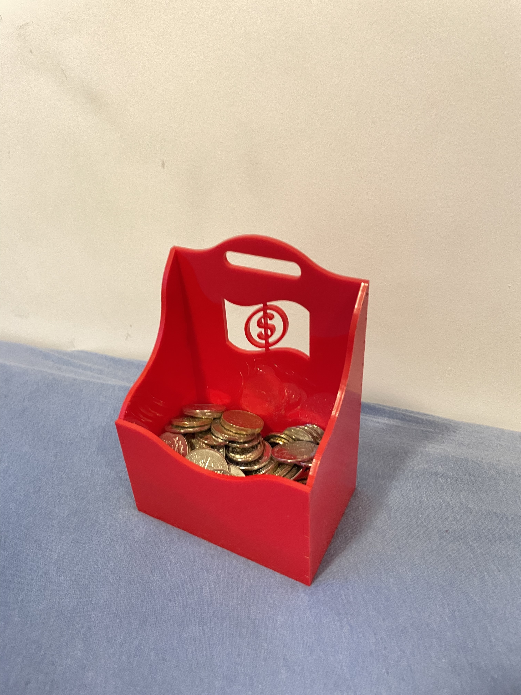
Tími:
Hugmyndarvinna: ~45 mín
Vinnsla í Fusion: 5 klst & 45 mín
Vinnsla í InkScape: 30 mín
Bið eftir skurðarvél: 30 mín
Skráning/Glósur: 1 klst
Samtals: ~ 8,5 klst
Hér er gagnabankinn:
Verkefni 2 lokið